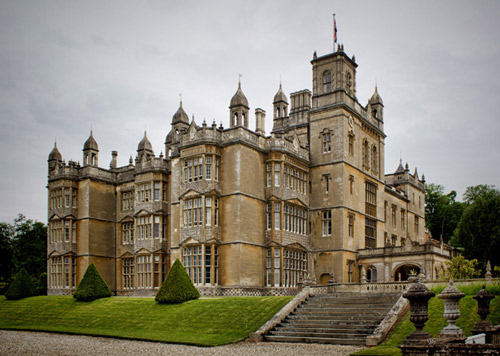
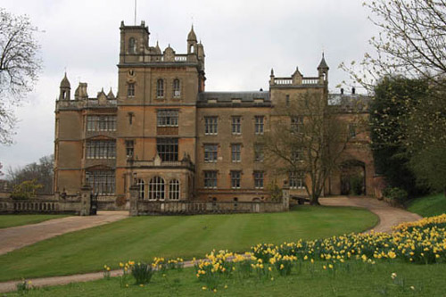
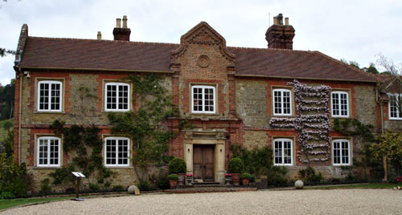

Englefield House in Berkshire. Used in this episode as 'Furrowbank'. In 1559, the house was confiscated from Sir Francis Englefield, a servant of the Catholic Queen Mary, for "consorting with enemies" of the new Protestant monarch, Elizabeth I. Local tradition is that the Queen granted Englefield to her spymaster, Sir Francis Walsingham, although there is no evidence of this. (Also used in 'The Double Clue').

Englefield House has also been used as a location in 'The King's Speech', 'Great Expectations' (2012), 'Midsomer Murders', 'The Go-Between', 'X-Men', 'Match Point' and an episode of 'Miss Marple'.

Chilworth Manor in Surrey used as 'Adela Marchmont's house'. Recorded in the Domesday Book as a monastery which was destroyed by Henry VIII and by 1580 was owned by William Morgan. In 1725 Sarah, the widow of the Duke of Marlborough became owner. It then passed through inheritances to the Duke of Northumberland who held it until the 1930s.

The George Hotel, Dorchester-on-Thames, Oxfordshire used as 'The Stag Inn'.